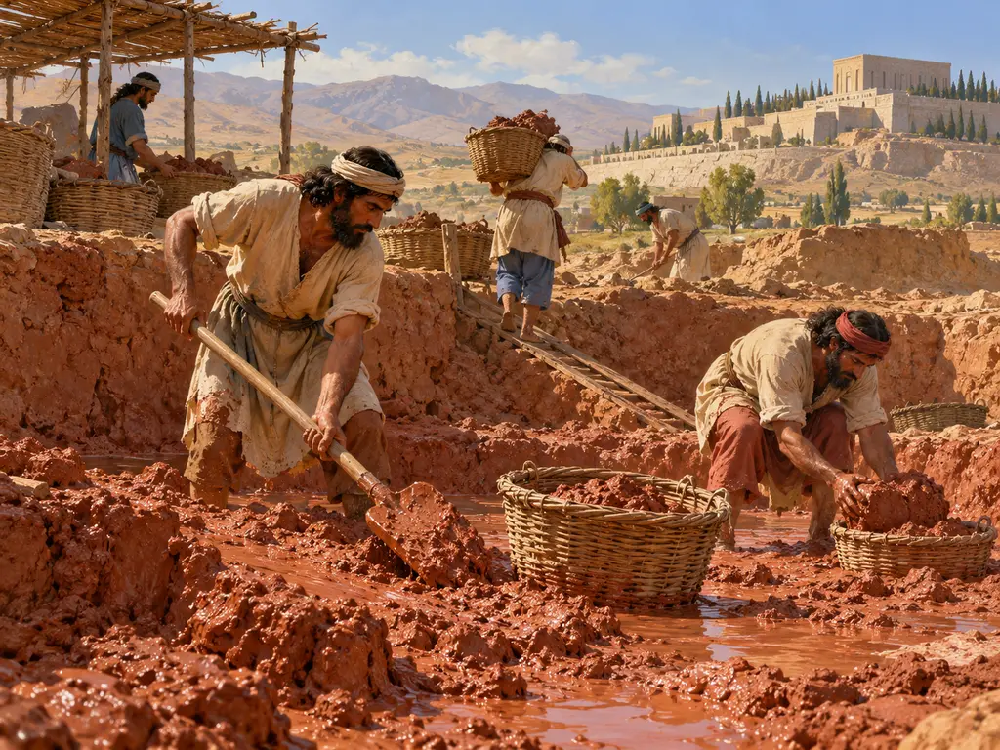
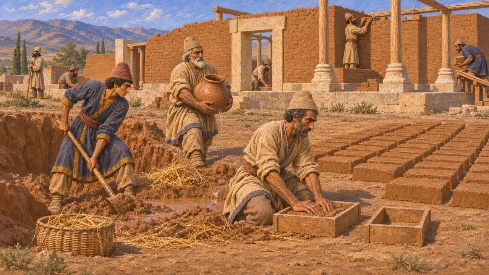
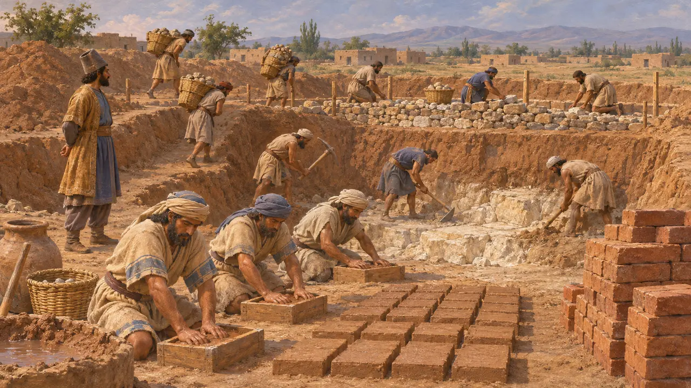
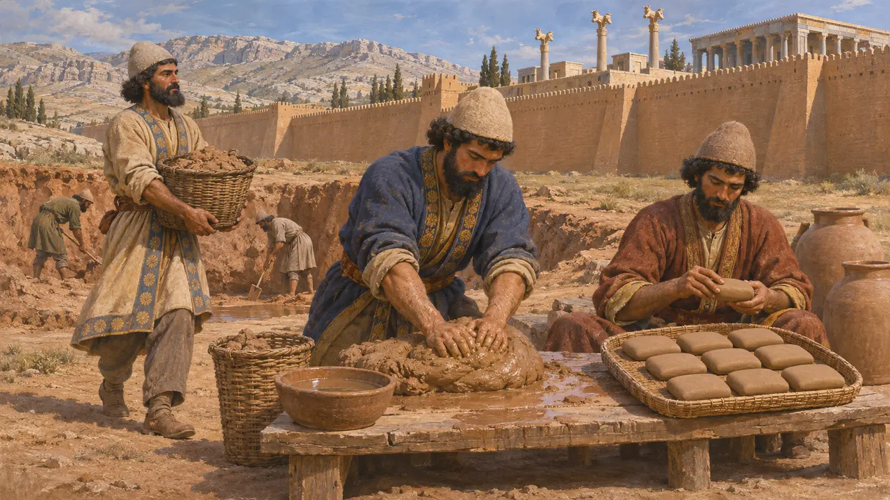
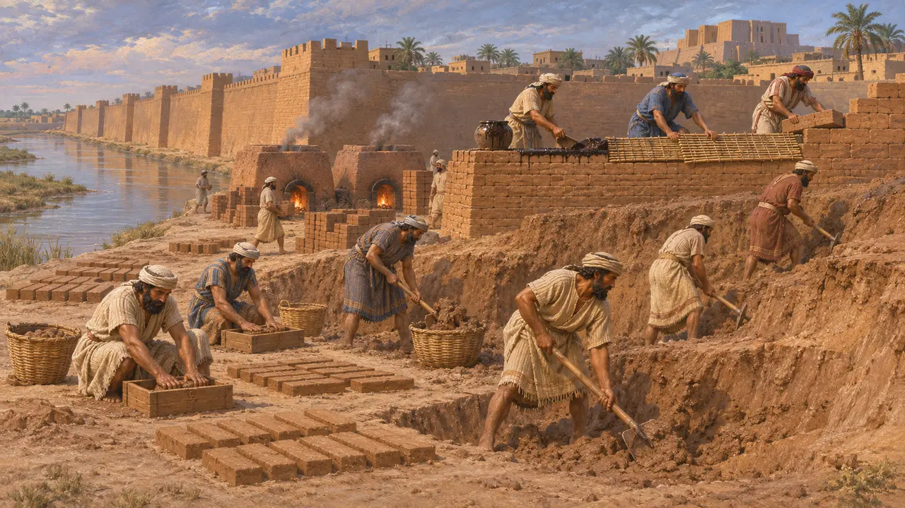
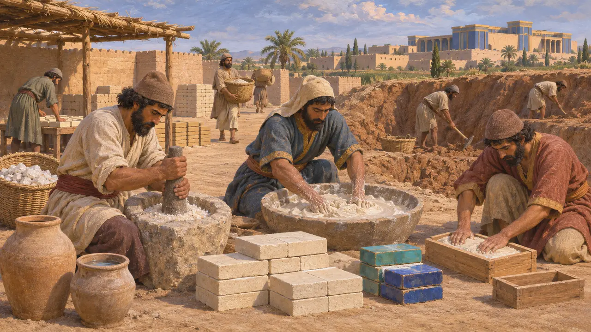

Tongrube
Erd- und Tonabbau für Ziegel, Töpfe und Täfelchen, Perserreich, 6.–5. Jh. v. Chr.
Aus dem Boden gegrabene Erde war der gebräuchlichste Baustoff des Perserreichs. In Pasargadae und Persepolis sind steinerne Plattformen und Säulen erhalten, doch die meisten Mauern bestanden aus Lehmziegeln. Aus Ton entstanden auch Gefäße, gebrannte Ziegel und die Tafeln, auf denen die Schreiber des Königs ihre Abrechnungen führten.
Im Spiel: Im Spiel ist die Tongrube ein Gewerbebetrieb, der Flusston abbaut und höchstens vier Felder vom Wasser entfernt stehen muss. Echte Bauleute gruben oft die örtliche Erde nahe der Baustelle ab. Wasser brauchte man zum Anmischen; die Flussregel vereinfacht also ein tatsächliches Erfordernis.

Lehmziegel hinter dem Stein
Zeitgenössisch belegtDie Ausgrabungen in Pasargadae und Persepolis zeigen, dass die steinernen Plattformen, Säulenbasen und Türrahmen durch dicke Mauern aus sonnengetrockneten Lehmziegeln verbunden waren. Für solche Ziegel brauchte man nur Erde, Wasser und meist einen Zuschlag wie gehäckseltes Stroh; die Masse wurde in Formen gepresst und in der Sonne getrocknet. Da Lehmziegel zerfallen, sobald die Dächer einstürzen, sehen Besucher heute nur noch die steinernen Teile.
E. Schmidt, Persepolis I, 1953; D. Stronach, Pasargadae, 1978

Dareios über das Ausheben der Fundamente in Susa
Zeitgenössisch belegtIn seiner Gründungsurkunde für den Palast in Susa berichtet Dareios, man habe die Erde ausgehoben, bis man auf Fels stieß. Danach wurde Schutt eingefüllt, um den Unterbau zu erhöhen. Er fügt hinzu, dass die gebrannten Ziegel von Babyloniern geformt wurden, einem Volk mit langer Tradition im Ziegelhandwerk. Die Urkunde stellt Erdarbeiten und Ziegel als königliches Werk neben Holz, Gold und Stein.
DSf

Ton für die Schreiber
Zeitgenössisch belegtIn der Befestigungsmauer von Persepolis fand man Tausende ungebrannter Tontafeln. Sie stammen aus der Zeit von etwa 509 v. Chr. bis 493 v. Chr. und sind überwiegend auf Elamisch verfasst. Sie verzeichnen Rationen an Getreide, Wein und Bier, die an Arbeiter und Beamte in der Persis ausgegeben wurden, darunter die Arbeitstrupps, die für den König bauten. Die Verwaltung des Kernlands hing von einem steten Nachschub an gutem Ton ab.
R. Hallock, Persepolis Fortification Tablets, 1969

Herodot über die Ziegel Babylons
Antiker BerichtHerodot berichtet, dass die Babylonier einen Graben um ihre Stadt aushoben und aus der ausgehobenen Erde Ziegel formten. Sie brannten die Ziegel in Öfen und verlegten sie in heißem Asphalt. Nach jeder dreißigsten Lage fügten sie eine Schicht aus geflochtenem Schilf ein. Seine Beschreibung entspricht der mesopotamischen Bauweise, auf die persische Könige zurückgriffen.
Herodotus 1.179

Echte Werkstatt oder königliches Idealbild
UmstrittenDie Historiker sind sich uneins, wie wörtlich die Liste der Völker und Materialien in der Gründungsurkunde des Dareios aus Susa zu lesen ist. Manche sehen darin ein Verzeichnis, wer wo arbeitete, andere vor allem königliche Ideologie, die das ganze Reich im Dienst des Königs zeigt. Untersuchungen der Glasurziegel von Susa erschweren das Bild zusätzlich, denn viele bestanden aus einer kieselhaltigen Masse aus zerstoßenem Sand statt aus gewöhnlichem Ton. Ziegel waren in Susa also nicht einfach ein Erzeugnis der Tongrube.
P. Briant, From Cyrus to Alexander, 2002; J. Perrot (ed.), The Palace of Darius at Susa, 2013
Quellen
- DSf
- R. Hallock, Persepolis Fortification Tablets, 1969
- Herodotus 1.179
- D. Stronach, Pasargadae, 1978
- E. Schmidt, Persepolis I, 1953
- P. Briant, From Cyrus to Alexander, 2002